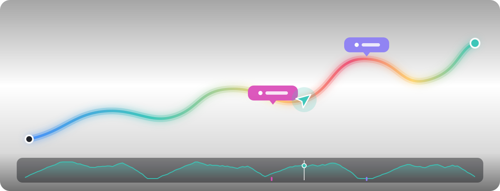
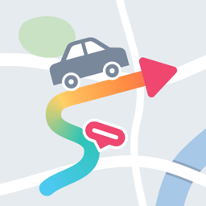

Record your drives. Replay them on a map.
CarReplotter records your drives with an OBD2 adapter and GPS, and lets you replay them on a map with speed, RPM and fuel economy in sync.
Features
- Records automatically when you start the engine, and stops when you park
- Replay each trip on a map, colored by speed, RPM or fuel economy
- Driving events: hard acceleration and braking, speeding, sharp turns, impacts and breaks
- A customizable meter (dashboard) and a mini window while you use navigation
- Several vehicles, identified automatically by VIN and adapter
- Export trips as GPX, KML or CSV, and back up your data to a folder you choose
Works with Bluetooth Low Energy and Wi-Fi ELM327-compatible OBD2 adapters. You can also record with GPS only.
Your data stays with you
Where you drove never leaves your phone. There is no account and no server, and the app has no ads or analytics. See the privacy policy for details.
Support
Questions, bug reports and feedback: carreplotter@northeye.org
Want to help translate the app? Translations are on GitHub.